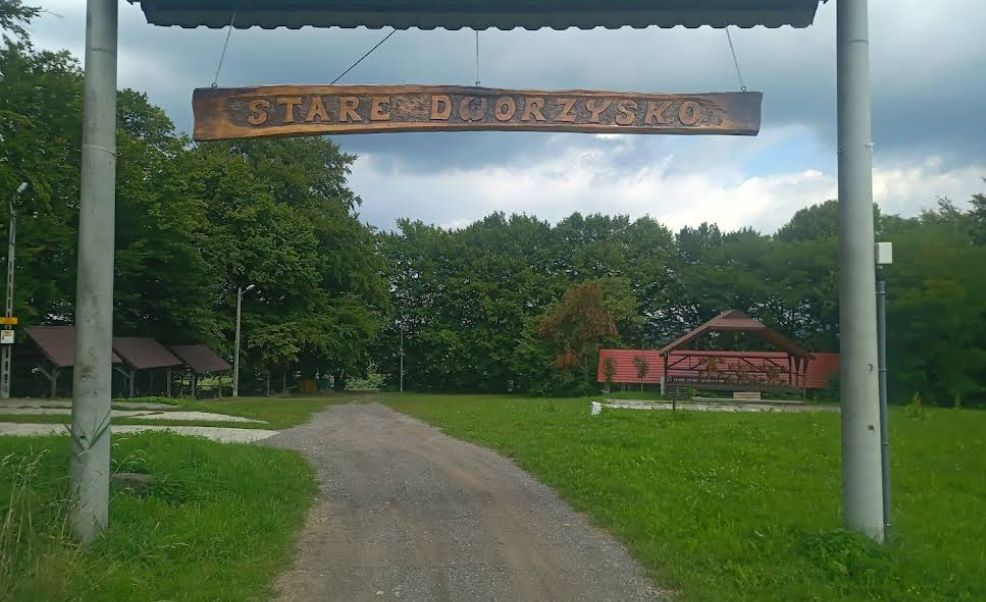

Serdecznie zapraszamy na piknik będący przedłużeniem naszego poślubnego tournee!
Można nazwać go poprawinami, dla nas będzie to przede wszystkim okazja do spotkania się z Wami w miłej i całkowicie niezobowiązującej atmosferze nawiązującej do najlepszych woodstockowych tradycji 🔥
Szczegóły:
Do naszej dyspozycji będzie duża wiata ze stołami, scena i miejsce przed nią oraz duże pole, na którym można postawić samochód, namiot, campera, co tylko zapragniecie 😎 ponieważ nocleg na miejscu wydaje się wygodną opcją dla miłośników turystyki.
Rozstawienie się z namiotem / camperem jest w uczciwej cenie: zero zł. Na miejscu jest podłączenie do prądu (na pewno przyda się przedłużacz), natomiast bieżąca woda dostępna jest z jednego kranu.
Toaleta będzie w formie "tojki".
Planujemy muzykę, piwo, wegegrilla i ogólny chillout. Jeśli zabierzecie najmłodszych, przygotujemy grę terenową w miejscu imprezy.
W razie poszukiwania planów na kolejny dzień (3 Maja) - w pobliżu jest park rozrywki Energylandia, no i oczywiście tradycyjne atrakcje Jury Krakowsko-Częstochowskiej!
Formuła imprezy zakłada pełną swobodę, zatem nie musicie się specjalnie zapowiadać - zapraszamy Was w dowolnym składzie i wymiarze czasowym 😉
Zaczynamy oficjalnie o 15:00, natomiast fizycznie będziemy na miejscu już od ok. 12:00 aby wszystko przygotować. Jeśli planujecie np. przybyć na chwilę po drodze, przybić piątkę - będzie nam mega miło!
Bawimy się do momentu, aż skończą się siły). Teren oddajemy do godz. 10 w niedzielę.
Pełen luz! Formuła piknikowo-woodstockowa. Ubierzcie się tak, żeby było Wam wygodnie odpoczywać i dobrze się bawić.
Tak, przed samą bramą do Starego Dworzyska znajduje się spory, bezpłatny parking. Z kolei na terenie pikniku można będzie stanąć camperem lub rozbić namiot.
Możecie wziąć ze sobą dowolne zaprowiantowanie. Zapewniamy przekąski i grilla bezmięsnego ale miejsca na ruszcie starczy na każdą z opcji!
Co tylko zechcecie - tak, aby móc się dobrze bawić i zrelaksować w granicach komfortu innych.
Chcielibyśmy zachować woodstockowy klimat wzajemnej życzliwości i zabawy - jeśli np. masz fajną grę, przebranie, gadżet, pojazd mogący spodobać się innym - będzie to właściwe miejsce!
Tak! Będą wyznaczone miejsca na rozłożenie namiotu oraz zaparkowanie campera.